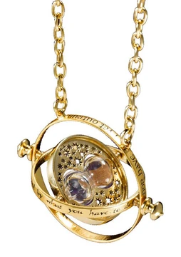

Zaman Döndürücü

Malzeme: Altın Kaplama ve Kum Saati
Özellik: Zamanı Geri Döndürebilme
Açıklama: Sihir Bakanlığı tarafından onaylanmış, kullanıcının zaman yolculuğu yapmasını sağlayan oldukça nadir ve güçlü bir tılsımlı kolye.

Malzeme: Altın Kaplama ve Kum Saati
Özellik: Zamanı Geri Döndürebilme
Açıklama: Sihir Bakanlığı tarafından onaylanmış, kullanıcının zaman yolculuğu yapmasını sağlayan oldukça nadir ve güçlü bir tılsımlı kolye.